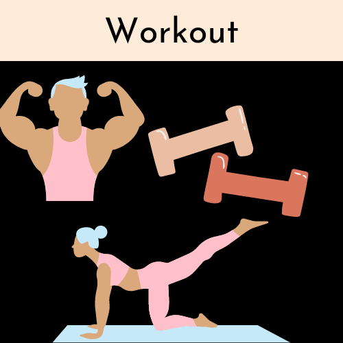

Song of the week

This is our winner for this week!
Which song will be our next winner?
Be sure to cast your vote on our social media polls:
On our Instagram account we will post a story with a set of songs you can choose from, after 24 hours the less voted will be exluded and we will continue exluding the last voted up until Friday
On our Tiktok account we will post videos with the options and after 24 hours, just like on Instagram, we will exlude the least voted song
On our Twitter you can find the same options you will find on our other social media accounts and the procedure stays the same.
The results from your vote on one of our social media platforms will be summed, permitting us to elect the song of the week by exclusion of the other tunes.